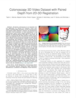

Colonoscopy 3D Video Dataset (C3VD)
from Colonoscopy 3D Video Dataset with Paired Depth from 2D-3D Registration
Johns Hopkins University
Abstract
Screening colonoscopy is an important clinical application for several 3D computer vision techniques, including depth estimation, surface reconstruction, and missing region detection. However, the development, evaluation, and comparison of these techniques in real colonoscopy videos remain largely qualitative due to the difficulty of acquiring ground truth data. In this work, we present a Colonoscopy 3D Video Dataset (C3VD) acquired with a high definition clinical colonoscope and high-fidelity colon models for benchmarking computer vision methods in colonoscopy. We introduce a novel multimodal 2D-3D registration technique to register optical video sequences with ground truth rendered views of a known 3D model. The different modalities are registered by transforming optical images to depth maps with a Generative Adversarial Network and aligning edge features with an evolutionary optimizer. This registration method achieves an average translation error of 0.321 millimeters and an average rotation error of 0.159 degrees in simulation experiments where error-free ground truth is available. The method also leverages video information, improving registration accuracy by 55.6% for translation and 60.4% for rotation compared to single frame registration. 22 short video sequences were registered to generate 10,015 total frames with paired ground truth depth, surface normals, optical flow, occlusion, six degree-of-freedom pose, coverage maps, and 3D models. The dataset also includes screening videos acquired by a gastroenterologist with paired ground truth pose and 3D surface models. The dataset and registration source code are available at durr.jhu.edu/C3VD.
Paper
Citation
Please cite our publication if you use code or data from this site.
@article{bobrow2022,
title = {Colonoscopy 3D Video Dataset with Paired Depth from 2D-3D Registration},
author = {Taylor L. Bobrow, Mayank Golhar, Rohan Vijayan, Venkata Akshintala, Juan R. Garcia, Nicholas J. Durr},
journal= {arXiv:2206.08903},
year = {2022},
}
Results
Colonoscopy video frames (left) are registered with rendered views of a ground truth 3D model (right). Edge features (overlay) are aligned by optimizing a loss function (bottom).
Real colonoscope frames are paired with registered ground truth depth, surface normals, occlusion, and optical flow frames
Dataset
C3VD contains 22 registered videos with paired ground truth depth, surface normals, optical flow, occlusion, six degree-of-freedom pose, coverage maps, and 3D models. The dataset also includes 4 screening colonoscopy videos acquired by a gastroenterologist with paired ground truth pose and 3D surface models. 3D model files and molds are also available for download. Registration and rendering code is made available on GitHub. Files are tagged with "under_review" until peer review is complete, at which point this page will be updated with the final files.
Registered Videos
For each registered video frame, the dataset includes:
- Depth frame: depth along the camera frame’s z-axis, clamped from 0-100 millimeters. Values are linearly scaled and encoded as a 16-bit grayscale image.
- Surface normal frame: reported with respect to the camera coordinate system. X/Y/Z components are stored in separate R/G/B color channels. X/Y components are linearly scaled from ± 1 to 0-65535, and the Z component is linearly scaled from 0-1 to 0-65535. Values are encoded as a 16-bit color image.
- Optical flow frame: computed flowing from the current frame to the previous frame, meaning the first frame in the sequence has no value. Values are saved in a color image, where the R-channel contains X-direction motion (left→right, -20 to 20 pixels), and the G-channel contains Y-direction motion (up→down, -20 to 20 pixels). Values are linearly scaled from 0 to 65535 and encoded as a 16-bit color image.
- Occlusion frame: encoded as an 8-bit binary image. Pixels occluding other mesh faces within 100mm of the camera origin are assigned a value of 255, and all other pixels are assigned a value of 0.
- Camera pose: saved in a file named pose.txt. Each line contains a homogenous pose (flattened in row-major order) corresponding to each frame.
For each video sequence, we also provide:
- 3D model and coverage map: ground truth triangulated mesh, stored as a Wavefront OBJ file named outputMesh.obj. Coverage is embedded in the OBJ file by texture vertices assigned to each face (vt=1 is observed, vt=2 is unobserved).
| Model | Texture | Video | # Frames | Download | |
|---|---|---|---|---|---|
| Cecum | 1 | a | 276 | Preview | cecum_t1_a_under_review.zip (2.65 GB) |
| Cecum | 1 | b | 765 | Preview | cecum_t1_b_under_review.zip (7.13 GB) |
| Cecum | 2 | a | 370 | Preview | cecum_t2_a_under_review.zip (3.40 GB) |
| Cecum | 2 | b | 1,142 | Preview | cecum_t2_b_under_review.zip (10.40 GB) |
| Cecum | 2 | c | 595 | Preview | cecum_t2_c_under_review.zip (5.54 GB) |
| Cecum | 3 | a | 730 | Preview | cecum_t3_a_under_review.zip (6.44 GB) |
| Cecum | 4 | a | 465 | Preview | cecum_t4_a_under_review.zip (4.49 GB) |
| Cecum | 4 | b | 425 | Preview | cecum_t4_b_under_review.zip (4.08 GB) |
| Descending Colon | 4 | a | 148 | Preview | desc_t4_a_under_review.zip (1.03 GB) |
| Sigmoid Colon | 1 | a | 700 | Preview | sigmoid_t1_a_under_review.zip (5.11 GB) |
| Sigmoid Colon | 2 | a | 514 | Preview | sigmoid_t2_a_under_review.zip (3.65 GB) |
| Sigmoid Colon | 3 | a | 613 | Preview | sigmoid_t3_a_under_review.zip (4.51 GB) |
| Sigmoid Colon | 3 | b | 536 | Preview | sigmoid_t3_b_under_review.zip (4.18 GB) |
| Transcending Colon | 1 | a | 61 | Preview | trans_t1_a_under_review.zip (0.50 GB) |
| Transcending Colon | 1 | b | 700 | Preview | trans_t1_b_under_review.zip (4.28 GB) |
| Transcending Colon | 2 | a | 194 | Preview | trans_t2_a_under_review.zip (1.40 GB) |
| Transcending Colon | 2 | b | 103 | Preview | trans_t2_b_under_review.zip (0.81 GB) |
| Transcending Colon | 2 | c | 235 | Preview | trans_t2_c_under_review.zip (1.48 GB) |
| Transcending Colon | 3 | a | 250 | Preview | trans_t3_a_under_review.zip (1.56 GB) |
| Transcending Colon | 3 | b | 214 | Preview | trans_t3_b_under_review.zip (1.46 GB) |
| Transcending Colon | 4 | a | 382 | Preview | trans_t4_a_under_review.zip (2.59 GB) |
| Transcending Colon | 4 | b | 597 | Preview | trans_t4_b_under_review.zip (4.01 GB) |
Screening Videos
In addition to the video sequence, each file also contains camera pose information saved in a file named pose.txt. Each line contains a homogenous pose (flattened in row-major order) corresponding to each frame.
| Model | Texture | # Frames | Download | |
|---|---|---|---|---|
| Full Colon | 1 | 5,458 | Preview | screening_t1_under_review.zip (8.13 GB) |
| Full Colon | 2 | 5,100 | Preview | screening_t2_under_review.zip (7.09 GB) |
| Full Colon | 3 | 4,726 | Preview | screening_t3_under_review.zip (7.07 GB) |
| Full Colon | 4 | 4,774 | Preview | screening_t4_under_review.zip (7.36 GB) |
3D Model Files
| Model | Object Download | Mold Download |
|---|---|---|
| Ascending Colon | ascend_model_under_review.obj (25.4 MB) | ascend_mold_under_review.zip (18.7 MB) |
| Cecum | cecum_model_under_review.obj (54.8 MB) | cecum_mold_under_review.zip (24.9 MB) |
| Descending Colon | desc_model_under_review.obj (38.0 MB) | desc_mold_under_review.zip (26.6 MB) |
| Sigmoid Colon | sigmoid_model_under_review.obj (20.8 MB) | sigmoid_mold_under_review.zip (42.2 MB) |
| Transcending Colon | trans_model_under_review.obj (18.3 MB) | trans_mold_under_review.zip (24.1 MB) |
| Full Colon | full_model_under_review.obj |
Calibration Files
This work is licensed under CC BY-NC-SA 4.0